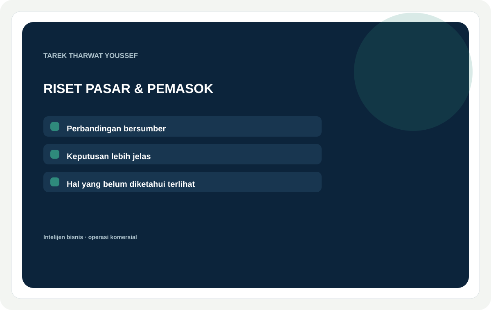
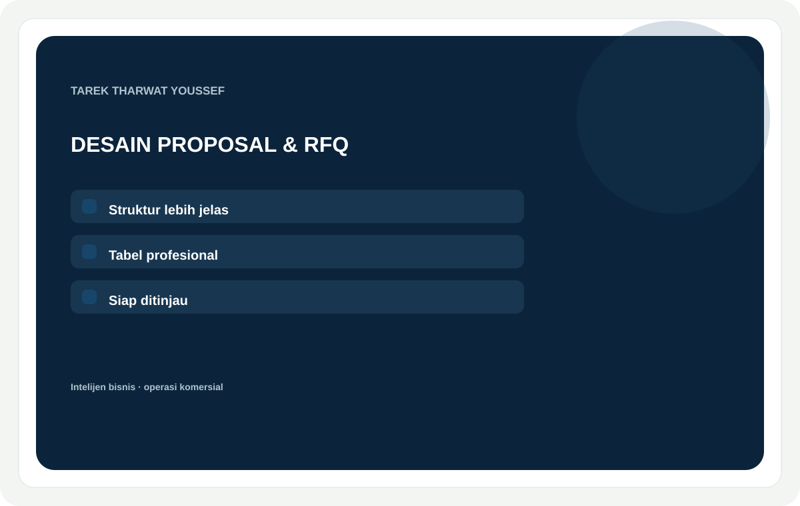
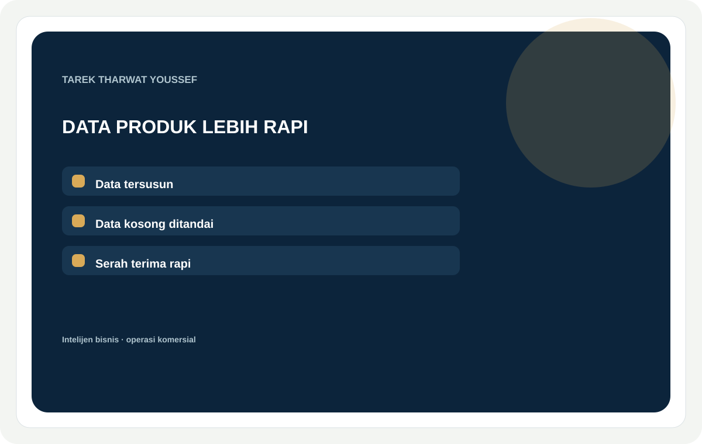

Rancangan layanan · untuk ditinjau
Hasil kerja yang jelas, berguna, dan diserahkan dengan rapi.
Layanan ini berangkat dari bukti kerja pilihan dan berfokus pada hasil yang dibutuhkan klien. Rentang paket dan estimasi waktu masih berupa rancangan.

Riset pasar, pesaing & pemasok
Saya akan meneliti pasar, pesaing, atau pemasok Anda dan menyusun laporan yang siap mendukung keputusan.
Perbandingan bersumber yang membedakan fakta, perkiraan, dan pertanyaan yang masih terbuka.
Klien yang sesuaiTim ekspansi pasar, pendiri UKM, eksportir, dan pembeli yang perlu membandingkan pilihan tertentu.
Bukti pekerjaanStruktur bukti EEMEI dan riset komersial pilihan, dilengkapi contoh baru dengan lingkup terbatas dari sumber publik.
DasarSatu pertanyaan bisnis · Tiga entitas · Enam bidang yang disepakati · Perbandingan dengan tautan sumber · ringkasan 2 halaman
StandarSatu pasar/kategori · Lima entitas · Sepuluh bidang + catatan sumber · ringkasan keputusan 4–6 halaman · Satu revisi
PremiumDua segmen yang ditentukan · Hingga delapan entitas · Perbandingan + lokakarya keputusan · Pertanyaan skenario dan pemeriksaan lanjutan · Dua revisi
Waktu pengerjaan · estimasi sementara3 / 5 / 8 hari kerja · 4–6 / 8–12 / 16–24 jam kerja terfokus.
Yang diperlukanKeputusan yang akan diambil, produk/kategori, wilayah sasaran, bidang perbandingan, pembaca yang dituju, serta sumber yang boleh Anda bagikan.
Pertanyaan umumApakah Anda dapat menghubungi atau mensertifikasi pemasok? Paket ini membandingkan bukti yang tersedia; kontak langsung atau pemeriksaan sertifikasi memerlukan lingkup terpisah. Apakah hal yang belum diketahui akan ditandai? Ya, brief membedakan fakta bersumber dari pertanyaan terbuka.
Kata kunci pencarianriset pasar · analisis pesaing · riset pemasok · intelijen pasar · analisis pengadaan
Konsep gambar layananKartu layanan bernuansa biru tua, putih hangat, dan hijau laut; menonjolkan bukti kerja tanpa foto stok.
Kisaran harga rancanganDasar / standar / premium: $125 / $350 / $700 USD. Rancangan untuk ditinjau.

Proposal komersial, RFQ & dokumen bisnis
Saya akan menyusun informasi bisnis Anda menjadi proposal komersial, RFQ, atau dokumen bisnis yang profesional.
Struktur yang jelas, tabel yang rapi, dan hasil siap ditinjau berdasarkan fakta yang Anda berikan.
Klien yang sesuaiUKM, tim pengadaan, pendiri usaha, dan manajer komersial.
Bukti pekerjaanContoh struktur proposal yang telah disanitasi dan matriks respons multibahasa.
DasarHingga 5 halaman materi sumber · Satu bahasa · Struktur + tata letak rapi · Satu revisi
StandarHingga 12 halaman · Tabel dan matriks perbandingan · File yang dapat diedit + PDF · Satu revisi
PremiumHingga 20 halaman atau paket dwibahasa yang disetujui · Pemeriksaan konsistensi istilah dan tabel · File yang dapat diedit + PDF · Dua revisi
Waktu pengerjaan · estimasi sementara3 / 5 / 8 hari kerja · 4–6 / 9–14 / 18–28 jam kerja terfokus.
Yang diperlukanPembaca dan tujuan dokumen, fakta sumber, aset merek yang disetujui, bahasa/format, pemberi persetujuan akhir, dan tenggat penyerahan.
Pertanyaan umumApakah Anda membuat proyeksi? Paket ini menata angka yang diberikan klien; pemodelan keuangan merupakan layanan terpisah. Dapatkah hasil dibuat dalam beberapa bahasa? Bisa, setelah bahasa dan tanggung jawab peninjauan disepakati sejak awal.
Kata kunci pencarianproposal bisnis · dokumen RFQ · presentasi komersial · perbandingan pemasok · penulisan bisnis
Konsep gambar layananKartu layanan bernuansa biru tua, putih hangat, dan hijau laut; menonjolkan bukti kerja tanpa foto stok.
Kisaran harga rancanganDasar / standar / premium: $175 / $450 / $850 USD. Rancangan untuk ditinjau.

Penataan katalog produk & pembersihan data
Saya akan merapikan dan menstrukturkan katalog produk, spreadsheet, atau data pemasok Anda.
Kolom yang konsisten, catatan yang lebih rapi, serta daftar informasi yang hilang atau bertentangan.
Klien yang sesuaiPedagang daring, distributor, dan tim produk yang menangani file tidak konsisten.
Bukti pekerjaanAlur pembersihan katalog yang terstruktur, dilengkapi pelacakan pengecualian dan hasil yang tertata.
DasarHingga 25 catatan · Satu file sumber · Kolom inti yang disepakati · Daftar data yang belum tersedia
StandarHingga 100 catatan · Maksimal 3 file dengan format konsisten · Pemetaan kolom + duplikasi · Catatan pengecualian + contoh hasil
PremiumHingga 250 catatan · Skema data yang disepakati · Pemetaan sumber · Ekspor siap ditinjau + serah terima
Waktu pengerjaan · estimasi sementara2 / 4 / 7 hari kerja · 2–4 / 6–10 / 14–22 jam kerja terfokus.
Yang diperlukanContoh file sumber, skema yang diinginkan, jumlah catatan, platform/format ekspor, aturan istilah, dan izin berbagi file.
Pertanyaan umumApakah Anda membuat spesifikasi produk yang belum ada? Tidak; hasilnya menandai kolom yang perlu dilengkapi tim Anda. Dapatkah Anda menangani hasil pindai atau format spreadsheet lama? Kirim contoh terlebih dahulu agar lingkupnya dapat diperiksa.
Kata kunci pencarianpembersihan katalog produk · pembersihan spreadsheet · penataan data produk · data pemasok · normalisasi data
Konsep gambar layananKartu layanan bernuansa biru tua, putih hangat, dan hijau laut; menonjolkan bukti kerja tanpa foto stok.
Kisaran harga rancanganDasar / standar / premium: $75 / $225 / $500 USD. Rancangan untuk ditinjau.